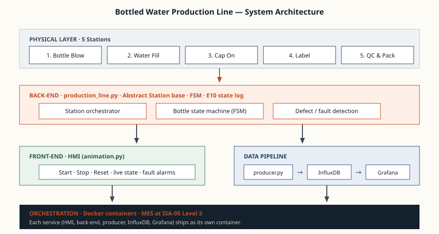
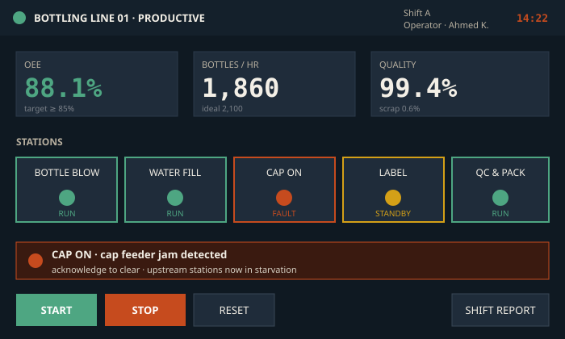

How the code, the HMI, the database and the dashboard fit together — and what runs each piece.
Six components, four layers, one repository.

At the bottom sit the five physical stations from the previous page. Above them runs the Python back end — an orchestrator loop, an abstract Station base class with five concrete subclasses, a finite state machine per in-flight bottle, and a SEMI E10 state log. On one side of the back end is the HMI: an operator-facing screen with Start, Stop and Reset controls plus live station status. On the other side is the data pipeline: a producer that writes measurements to InfluxDB over HTTP, and Grafana that queries InfluxDB to render the dashboards. Every service ships as its own Docker container.
The logic, the state, the rules for marking a bottle defective.
The back end lives in production_line.py. It defines an abstract Station class whose contract is simple: given an input bottle, return an output bottle or None. Five concrete subclasses — BottleBlow, WaterFill, CapOn, Label, and QualityControl — implement that contract their own way. The orchestrator loop iterates over the stations once per tick, moves bottles forward, and emits a state event for every station.
Each bottle carries an FSM. Its stage field takes values like "blowing", "filling", "capping", "labeling", "qc", "packed" or "reject". The HMI reads this field to decide where to draw the bottle, and the QC station reads it to decide whether the bottle is acceptable. A bottle marked defective at any station carries its reject reason forward and is counted against Quality in the OEE formula.
What the operator sees. Three rules: show what is needed now, make abnormal states unmistakable, never lie.

The HMI renders in pygame. Top strip: line status, shift, operator, clock. Below that, three KPI tiles — OEE, bottles/hour, quality. Then the station strip: a tile per station, colour-coded green / amber / red for Productive / Standby / Downtime. Below the stations, the alarm strip flashes red on any fault and tells the operator which station is affected. The bottom row has the three required controls: Start, Stop, Reset. There is no other clutter; everything on screen earns its place.
A time-series store, because every measurement we care about is a value over time.
InfluxDB 2.x runs as a Docker container exposed on port 8086. The producer.py script opens a session against the bucket and writes a point every time the back end emits an event: station state changes, bottles produced, fill volumes, fill temperatures, and defect counts. Each point carries tags identifying the station and the shift, which makes the Grafana queries trivial.
The mandatory parameter is there. Several others come along for free.
Grafana runs in its own Docker container on port 3000 and connects to InfluxDB as a read-only data source. The dashboard has three panels: a time-series of the line state (Productive vs Standby vs Down), a moving bar of bottles produced per minute, and the fill temperature trace (the parameter the assignment specifically asks for). The producer never talks to Grafana directly — the database is the contract between the data writer and the data reader, and either side can be replaced without touching the other.
One docker compose up. Five containers. Identical on every machine.
The repository ships with a docker-compose.yml that brings up InfluxDB, Grafana, the producer, the back-end simulator, and the HMI. The whole environment is reproducible from a fresh clone — no installed-on-my-laptop dependencies, no “works only here” surprises. Containers are how a working demo on a student laptop becomes a working deployment in a real plant: the image moves, the host changes, the behaviour stays the same.
The history is the project. Branches for features, tags for milestones.
The codebase lives on GitHub. Each station was developed on its own feature branch, merged to main after a quick self-review of the diff. Milestones — first end-to-end run, first Grafana panel, first Docker compose — are tagged so the grader can check out a clean version of any earlier stage. The Question Bank covers the Git workflow in detail; the same workflow is what was used to actually build the project.
The vocabulary is ISA-95. The simulator behaves like a small MES.
If this were a real plant, the five stations would each be driven by their own PLC (ISA-95 Level 1–2). The simulator plays the role of the Manufacturing Execution System above them at Level 3 — coordinating the line, tracking equipment state, computing OEE, raising alarms, exposing live numbers to the operator. ERP and business planning would sit above us at Level 4, consuming the daily production roll-up. The architecture you see on this page is the same shape a real factory IT stack takes.